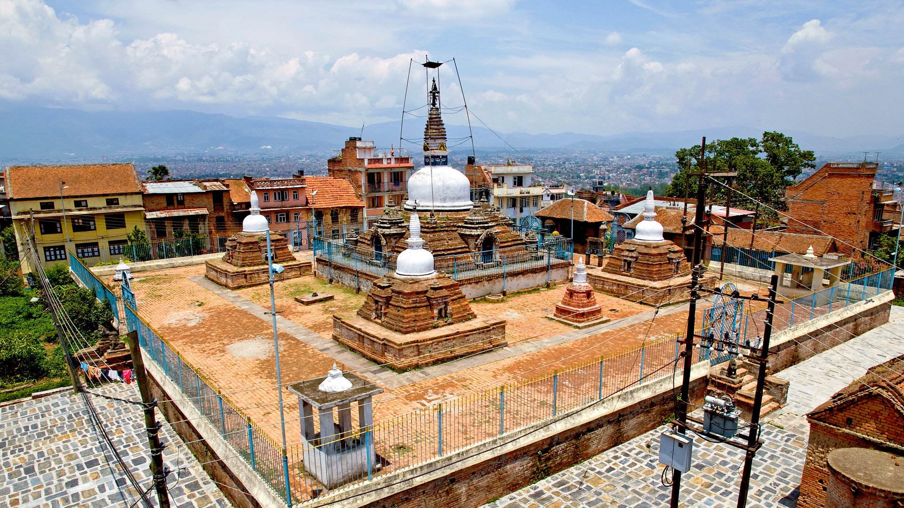
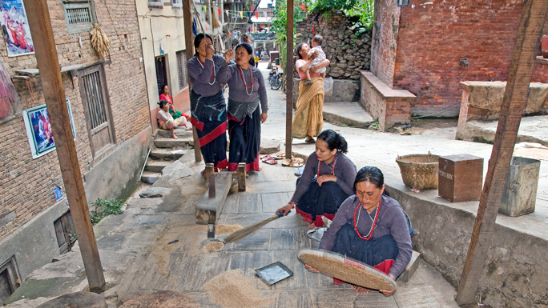
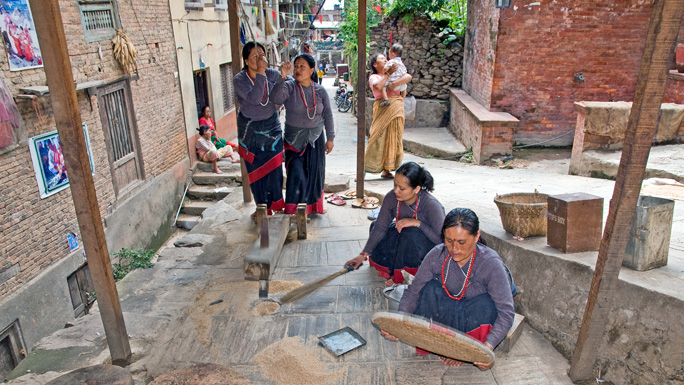

Newari culture.
KIRTIPUR
Visit Kirtipur for an authentic experience of theNewari culture.
Visit Kirtipur for authentic experience of the Newari culture, the indigenous culture of the Kathmandu Valley. Walk along its narrow lanes to observe the life of the people who have lived for many generations per age-old traditions and beliefs. Try some Newari food. Enjoy.
Kirtipur is also the starting point for day hiking to nearby hills like Champa Devi from where you can get splendid view of the Himalayas on a clear day. Similarly, you could combine the trip to Kirtipur with visit to well-loved Ganesh temple Jal Vinayak in Chobar. Cycling to the little town and back is also an option, if you are a cycling enthusiast.

